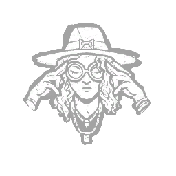

千里眼 Clairvoyance
所属：米凯拉·里德（逃生者）
| 等级 | 档位 1 | 档位 2 | 档位 3 |
|---|---|---|---|
| 数值 | 10 1 | 11 | 12 |
描述
你体内有一股超越视界的固有能量。拆除或祝福一处图腾后，千里眼激活。激活期间，空手时长按使用道具按钮以解锁你的全部气场解读潜能：气场在维持交互期间对你显现，最远64米，持续至多10/11/12秒：箱子 逃生门开关 发电机 地道 钩子 “还有别人看见了吗？只有我吗？” ——米凯拉·里德

所属：米凯拉·里德（逃生者）
| 等级 | 档位 1 | 档位 2 | 档位 3 |
|---|---|---|---|
| 数值 | 10 1 | 11 | 12 |
你体内有一股超越视界的固有能量。拆除或祝福一处图腾后，千里眼激活。激活期间，空手时长按使用道具按钮以解锁你的全部气场解读潜能：气场在维持交互期间对你显现，最远64米，持续至多10/11/12秒：箱子 逃生门开关 发电机 地道 钩子 “还有别人看见了吗？只有我吗？” ——米凯拉·里德